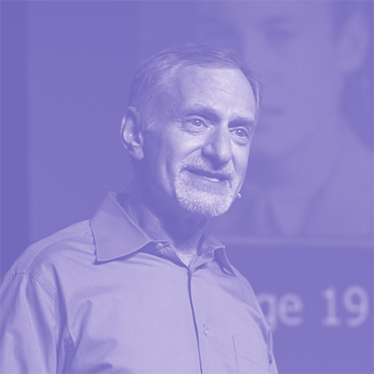

와 제 롤모델이 잡스에요!!! 아이폰 첫 출시되고 나서부터 계속 아이폰 쓰고 있는데 잡스가 너무 그리워요ㅠㅠ 지금은 돈만 벌려고 하는 것 같아서 디자인 발전도 없고ㅠㅠ와 제 롤모델이 잡스에요!!! 아이폰 첫 출시되고 나서부터 계속 아이폰 쓰고 있는데 잡스가 너무 그리워요ㅠㅠ 지금은 돈만 벌려고 하는 것 같아서 디자인 발전도 없고ㅠㅠ와 제 롤모델이 잡스에요!!! 아이폰 첫 출시되고 나서부터 계속 아이폰 쓰고 있는데 잡스가 너무 그리워요ㅠㅠ 지금은 돈만 벌려고 하는 것 같아서 디자인 발전도 없고ㅠㅠ와 제 롤모델이 잡스에요!!! 아이폰 첫 출시되고 나서부터 계속 아이폰 쓰고 있는데 잡스가 너무 그리워요ㅠㅠ 지금은 돈만 벌려고 하는 것 같아서 디자인 발전도 없고ㅠㅠ와 제 롤모델이 잡스에요!!! 아이폰 첫 출시되고 나서부터 계속 아이폰 쓰고 있는데 잡스가 너무 그리워요ㅠㅠ 지금은 돈만 벌려고 하는 것 같아서 디자인 발전도 없고ㅠㅠ
TED
당신의
‘소확행’을 위한 TED
TED는 미국의 비영리 재단으로 “널리 퍼져야 할 아이디어(Ideas worth spreading)”를 모토로 기술, 교육, 정치, 사회, 예술 등 다양한 주제로 강연회를 개최하고 있다. <바다소리>는 매달 다른 주제의 강연 동영상을 소개한다.
최근 라이프 트렌드로 떠오른 키워드는 ‘소확행’이다. ‘소확행’이란 주택구입 · 취업 · 결혼 등 크지만 성취가 불확실한 행복을 좇기보다는 ‘일상의 작지만 성취하기 쉬운 소소한 행복을 추구하는 삶의 경향 또는 그러한 행복’을 말한다. 이번 달 <바다소리>는 일상의 작은 행복을 발견할 수 있도록 제언하는 짧은 강연 동영상을 준비했다.
글
편집실
-
Matt
Killingsworth더 행복해지고 싶은가?
딴 생각을 하라!
매트 킬링스워스 _ 심리학자
‘인간은 언제 가장 행복할까?’라는 질문에 대한 데이터를 수집하기 위해 매트 킬링스워스는 사람들이 자신의 감정을 실시간으로 보고할 수 있는 ‘Track Your Happiness’라는 앱을 만들었다. 80개 국이 넘는 국적의 1만 5천 명이 넘는 사람들을 대상으로 연구한 결과 놀라운 사실이 발견됐다. 우리가 길을 잃을 때 행복을 느낀다는 것이다. 우리가 ‘딴 생각’을 할 때, 즉 마음이 현실을 떠나 자유로울수록 행복해질 수 있다는 것이다.
-

Robert
Waldinger우리를 행복하고 건강하게 하는 것
로버트 월딩어 _ 교수
좋은 삶을 만드는 행복에 관한 강연. 하버드 연구진은 무려 75년간 남성 724명의 인생을 추적하는 연구를 지속해왔다. 이 엄청난 연구가 발견하고 증명해낸 결과는 허탈하기까지하다. 그 결과는 바로 ‘친밀하고 좋은 관계’가 건강과 행복에 필수적이라는 사실. 그래서 더 돌아보게 된다. 이 사소해 보이는 관계를 만들고 지키기 위해 시간과 노력을 얼마나 기울이고 있는지를.
-
Michael Norton
행복을 돈으로 사는 방법
마이클 노튼 _ 사회과학자
흔히 ‘행복은 돈으로 살 수 없다’고 말한다. 그러나, 놀랍게도 마이클 노튼은 소비가 행복으로 연결된다고 말한다. 과연 그의 말대로 돈으로 행복을 살 수 있을까? 그는 ‘돈으로 행복을 살 수 없다고 말하는 사람은 돈을 허비하고 있는 것'이라고 말한다. 소비하던 대로 소비하지 않고 다르게 소비한다면 돈으로 행복을 얻을 수 있다는 말이다. 어쩌면 돈이 우리를 행복하게 하지 않는 이유는 우리가 돈을 잘못 쓰고 있기 때문인지도 모른다.
-
최고예요
322
-
좋아요
322
-
슬퍼요
322
-
그저 그래요
322
-
화나요
322